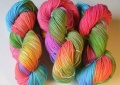

|
||
Premium Patterns Wintry Mix Mitts Love Bytes HawkeyeFree Patterns Kiddie Cadet Summerlin Ruffled Scarf Seamless DS Sock Simply Seamless Pouch Myriads of MushroomsExtras DIY Mitten Blocker Felt Patch Tutorial Yarn Dyeing Tutorial Needle Pouches Knitting Journal |
January 04, 2008 - Posted by Grace SchneblyForbes Forest FOProject Specs
I guess it is fitting for this scarf to be the last Christmas gift I blog about, considering I started it first and finished it last out of all my holiday knits. I finished it on the flight to Las Vegas and blocked it at Alice’s house, and sadly had to give it to Kenny a day late because it took 3 days to dry! Who knew things would dry slower in Vegas than in Boston? Even though it got to him a little late, it still looks great on him, making it a successful present in my book! Kenny says he loves it, especially the color, and I think that he’ll get lots of use out of it. I am really glad that I started this scarf back in September or I would have never finished it. Since it is pretty repetitive, it is a great thing to knit on in between other projects. Once you get the pattern down (I have to admit it took me entirely too long to memorize it), you can walk away from it for several days then come back to it with a fresh mind, no problem. I highly recommend trying to work the cables without a cable needle to save you some time especially since there are a lot of single stitch crossovers. This was my first time knitting bobbles, and although I didn’t learn how to knit backwards, that would also have saved some time too.
This is a great unisex scarf. I’ve seen versions that look great on men and women. The cable pattern is really interesting and easy to knit. If I were to reknit this scarf, I think that I would add a border of garter stitch at both ends. At the moment they look a little unfinished to me. Other than that, this is a great pattern to knit if you have the time. If you like the pattern, but scarf knitting isn’t for you, be sure to check out the newest Interweave Knits. Kathy Zimmerman has designed a Forbes Forest Pullover that takes this same cable pattern and uses it in a cute sweater. |
   Recent ReviewsRecent Posts
 Our Favorites
|
| © 2007 KathrynIvy.com | ||

{kind=link}